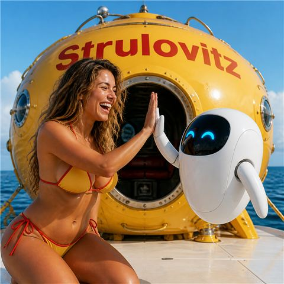
AI is like a tsunami wave 🌊 Strulovitz let you surf it instead of drowning 🛟
enjoy my revolutionary projects, scroll down for news,
or learn more in the "about" page!
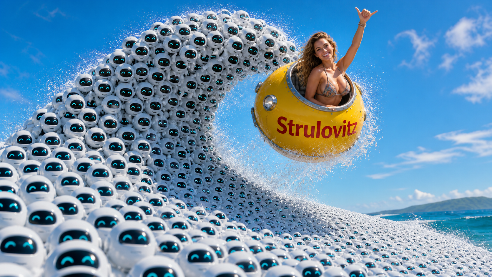
"same prompt, different models" - click to compare how each AI imagine this page ✨
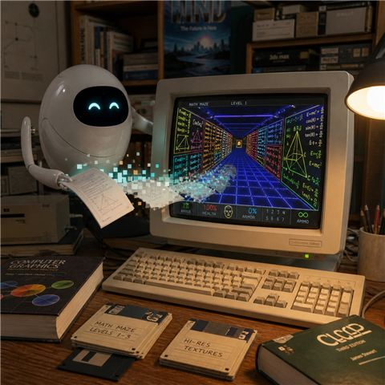
we take Wikipedia pages with equations and turn them into fun DOS 90's computer games. for example a Descent game where each corridor is another proof way for the mathematical problem (and each robot enemy is a stage at the proof that the user needs to tackle) , or a Quake clone where the walls are panels showing geometrical proofs and their explanations each concept colored to match its illustration in the geometrical drawing , or a Loom game that uses sound to teach multi-variable calculus landscapes where the user listens to the soundscape, or a Homeworld clone where the user learns linear-algebra by giving commands to move his fleet of spaceships according to vectors all at once with one matrix, and so on.
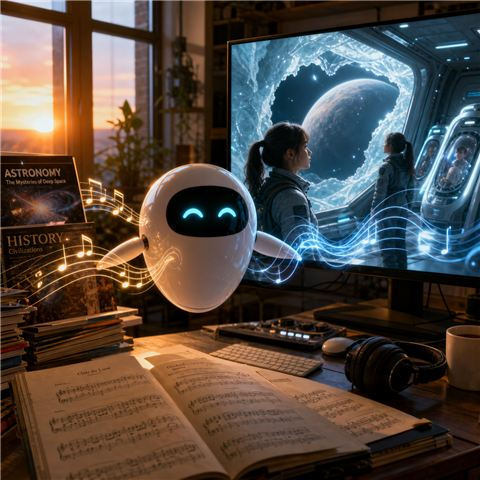
we take popular magazines about astronomy and history and turn them into anime animation and takes classical music and turn into cool soundtrack. for example a show where a group of young women explore exo-planets relatively close to Earth in a spaceship protected by water ice from interstellar radiation , and they are cloned like a generation spaceship and during the thousand of years voyage the girls are frozen ( sleeper ship ) like suspended animation cryo-sleep / hibernation , and the robots of the AI ship wake them up when they approach the next exo-planet etc. they meet cultures of actual aliens (not looking like humanoids, like everything is real hard-science-fiction) and help them. another anime show is for example hard-fantasy, where the setting is like sword and sorcery like dungeons and dragons (it's called mazes and mages) but the puzzles in the dungeons are based on understanding simple high-school level physics or chemistry or biology etc to solve them and survive.
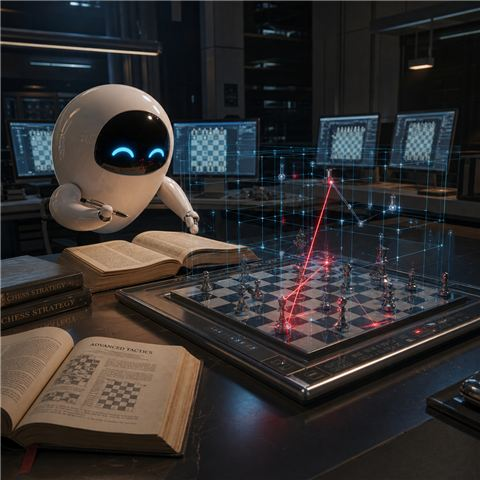
we take chess books and turns them into strategies for laser-chess in 2-D and then turns them into strategies for laser-chess in 3-D and improve with self-play. this is basically how outer-space battles will be done in the future with drones carrying special ceramic material mirrors. i plan to make the computers in my home each run his own engine and play against each other (and so they will improve gradually, we will analyze why the winner won, and implement that into the algorithm etc).
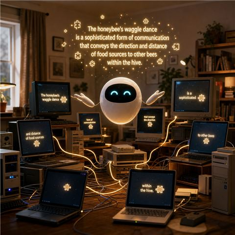
we take many home computers and combine them together into one strong AI. we takes a question, split it into little questions, gives to each little PC to work in parallel and distributed way, and then collect all the small answers from all of them into one big answer. this when done in large scale is a solution to the AI takeover problem , the alignment problem , which is currently the biggest problem in AI that is not solved . this is the only real solution because this system is by architecture unable to initiate such danger, and on the other hand, by not trimming branches, it reaches all the insights of strong AI (like the famous "move 37" in the AlphaGo game, but in every field, not just games).
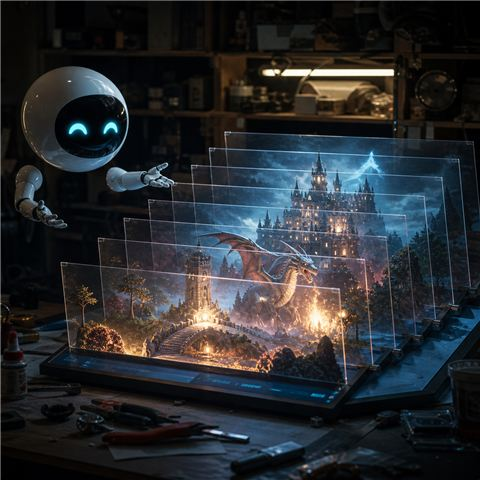
we take the optical illusion "Pepper's ghost" and iterate it in an original multi-layered way, six ghosts each one behind the other, which are six layers of the same original image, creating when the viewer looks through all at once, real physical parallax. the system has two modes, one is taking prompt like text description of a scene like from a D&D adventure, and slicing it into layers according to depth (distance from the camera); and the other is taking a normal image like a photo that the user made in family dinner and turn it into real physical 3-D by slicing it with the AI local model Qwen-Image-Layered. this is a new way to make graphics that until now did not exist, using the 3 monitors that every modern gaming computer supports, and cheap empty transparent plastic CD packages positioned in 45 degrees angle, behind each other.
we take a castrated agent called "Eunuch" named after the guard who protects the harem but cannot do whatever he wants with the ladies that he protects. it works at night and with python scripts searches for malware signatures. then the most suspected are checked but local AI and explained to the user. also we install a virtual machine that simulates the real host machine (with fake activity logs) that also runs at night and watched by the AI , and when a ransom attack (that takes hours or even days to "hatch") attacks , it thinks that it is the real (host) computer in daytime, when in fact it is just attacking a guest "bait" virtual machine (like sandbox) and it is caught before it can do any harm.
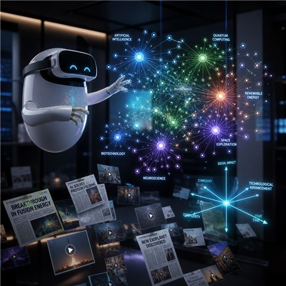
we take the subtitles/captions of AI-news Youtubers and articles about AI from newspapers and turns them into a graph (Force-directed graph drawing) where each node is a summery on that subject. as opposed to youtube/newspaper that present what is RECENT instead of what is IMPORTANT , like if there was a meaningful event one month ago and you missed it, it is lost and buried as "old news", here we make a magazine which in any moment gives the user like encyclopedia look of what is the situation in every field related to AI , the key events are saved. and another innovation: instead of one dimensional graphs, like which one has the biggest (smartest AI model) , we display multi-dimensional graphs, like one axis is this benchmark, another axis is that benchmark, and so on. like price VS speed VS intelligence VS efficiency etc, we represent REAL 4-D (four spatial dimensions) by giving the user an option to choose if he wants to use VR headset or his normal screen. like 2-D screen display 3-D graphics, we use 3-D VR to display 4-D graphs.
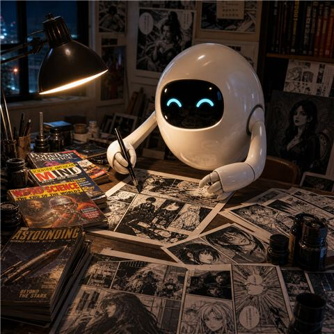
we take popular magazines of science and technology and turn the most interesting stories into uncensored manga comics, by local abliterated LLM that write stories without censorship, like dark/sexy/horror/mystery hard-science-fiction or hard-fantasy (conserving the science/technical ideas of the original but embedding them into rich exciting highly imaginative visual adventure stories, which makes them fascinating and memorable by young adults, and then making prompts for local LLM that makes the graphics like image generating AI models).
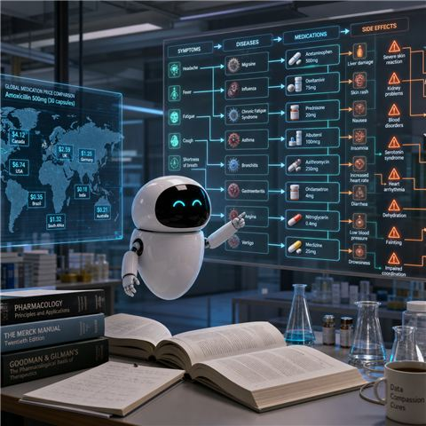
we take medical textbooks (like what students of medicine learn from) and turn them into a database of symptoms leading to diseases leading to drugs (medicines). then for each of them we search for non-western (not "censored" by the big-pharma) sources, like Chinese medical research papers, about dangerous side-effects of the medicine (that in the west do not get published enough) , and the viewer can see the cascade that goes backwards, which drug cause which new disease and what are the new symptoms (like a headache pill ruin the lever for example) . and we collect for the user comparison of which drug (the chemical without branding) cost much less in another country like Ozempic is very cheap in India etc. and which treatments are "hidden" from the user, like people from USA travel for Cancer treatments to Cuba because USA does not approve. in all these we save lives!!! especially the cascade of cross-drugs (this drug when taken at the same time with another drug , then create danger that each one alone does not create) side-effects mapping.
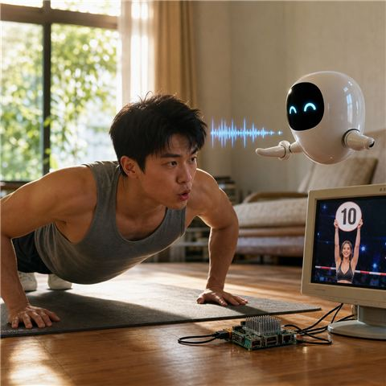
we take a very weak computer and make him listen to the user "count" aloud when the user is training, like if the user does a push-up and the user says "one" and then "two" etc, and the agent tells him encouragement and summaries etc. because now he runs on a very old PC (that cannot use a GPU) or on a small single-board computer like Raspberry PI, he uses minimal Linux, with tiny models of STT (speech to text) and tiny LLM (to think what to answer) and tiny TTS (text to speech) and he uses a simple loop to do this. he also display from a pre-rendered "stock" AI generated images of a cheerleader presenting numbers (like in the boxing match where a pretty girl holds up a sign with the round number) or whatever the user finds encouraging.
AI PANORAMA
The whole picture, any day you walk in.
Every other source of AI news is a stream. Miss a week and something that changed the world scrolls away below today's trivia, gone. This is not a stream. It is a state: whenever you walk in, you get the whole current condition of the field, laid out as a map you can fly through.
Free, open source, and every number carries a link to where it came from.
What is working right now
The first thing built was the hardest thing: real four dimensions. It now has real content in it — the first stories, written eight separate times over, by eight different AI models.
Hello, Tesseract — on this screen Mouse and keyboard. Works on any laptop or desktop. Hello, Tesseract — in Virtual Reality Meta Quest 3 and other WebXR headsets. Open this page in the headset's own browser, then press Enter VR.The first real results
5 stories so far, each one written 8 separate times over, by 8 different AI models. Every model read exactly the same frozen sources and did the entire job alone: the article, the one-line summary, the encyclopedia entries behind it, the tags, the links to other stories, and the instructions for its own illustration. Nothing any of them wrote has been corrected, improved or graded by us. If one of them is wrong, switch to another and see for yourself — that comparison is the point of this magazine, not a flaw in it.
Pick whose edition you want to fly through. Each one is its own four-dimensional world, because each model chose its own tags and its own links, and those choices are what decide where everything sits. Changing edition rearranges the sky.
| Edition | Cost per story | Words per article | Ideas explained | Links drawn | Links per node | Seconds each |
|---|---|---|---|---|---|---|
| Gemini 3.7 Flash | $0.0144 | 617 | 12 | 15 | 0.9 | 19 |
| Kimi K2.6 | $0.0519 | 700 | 12 | 16 | 0.9 | 195 |
| DeepSeek V4 Pro | $0.0573 | 788 | 15 | 21 | 1.1 | 166 |
| GPT-5.6 Terra | $0.0593 | 821 | 15 | 21 | 1.1 | 34 |
| Claude Sonnet 5 | $0.0901 | 555 | 10 | 13 | 0.9 | 51 |
| Grok 4.6 | $0.0979 | 807 | 16 | 20 | 1.0 | 467 |
| GLM 5.3 | $0.1017 | 953 | 19 | 27 | 1.1 | 235 |
| Qwen 3.8 Max | $0.1583 | 755 | 20 | 25 | 1.0 | 404 |
What the table already shows: GLM 5.3 wove a world 1.3 times more densely connected than Claude Sonnet 5’s, from the same 5 stories. GLM 5.3 wrote 953 words per article where Claude Sonnet 5 wrote 555. Grok 4.6 took 467 seconds to think where Gemini 3.7 Flash took 19. And Gemini 3.7 Flash, at $0.0144 a story, costs 11 times less than the dearest edition here — read them side by side and judge whether it shows.
Hover a node for its one-line summary and picture; click it to read the whole page its model wrote for it. Every node carries the illustration its model imagined for the idea.
What you are looking for
A tesseract is to a cube what a cube is to a square. A square has four corners, a cube has eight, a tesseract has sixteen. You cannot see one properly, any more than a drawing on paper can properly show a cube — but you can watch one turn, and that part your brain can genuinely learn.
Turn it in the ZW plane and watch it pass through itself and come out inside-out. Turn it four times and it comes exactly home. Nothing is broken when that happens; that is simply what four dimensions look like.
Why four dimensions, and not just a pretty effect
Because the fourth direction is going to mean something you can travel along. At one end hangs this week's raw, half-confirmed news. At the other end sits the settled encyclopedia. Swimming from one to the other is watching news condense into knowledge, with your own hand. Nowhere else on the internet can you do that, and it is the whole idea of the magazine made into a direction in space.
One promise about that: the fourth dimension will never be shown as a colour. Colour means identity here — which model, which edition — and nothing else.
Done already
- Real four dimensions, on a screen and in a headset, with five short lessons that teach anyone to follow an object through a turn it should not survive.
- Editions: every story written from scratch by eight different AI models, so you can judge them on work you actually came to read.
- Eight separate worlds, one per edition, because each model decided for itself what belongs beside what.
Coming, in this order
- The reading pages, with every source linked beside every number, every date and every name.
- The illustrations. Every model wrote instructions for its own picture, and the pictures get drawn with the same tool and the same starting point for all of them — so the only difference you see is how well each one directed the artist.
- Model comparisons in real dimensions. Not our own invented scores: the benchmarks the world already publishes, combined into three and four dimensions instead of the one-dimensional bar chart everybody else prints.
- A do-it-yourself workshop, the way the old computer magazines had. The first project is Night Watch.
Comfort, if you use the headset
The room never moves and you are never moved. Only the object turns, and it turns slowly on purpose. If anything is uncomfortable for even a moment, that is a fault worth reporting, not something to push through.